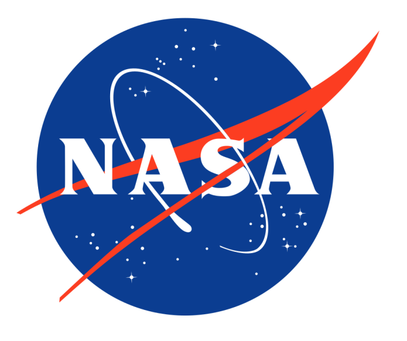
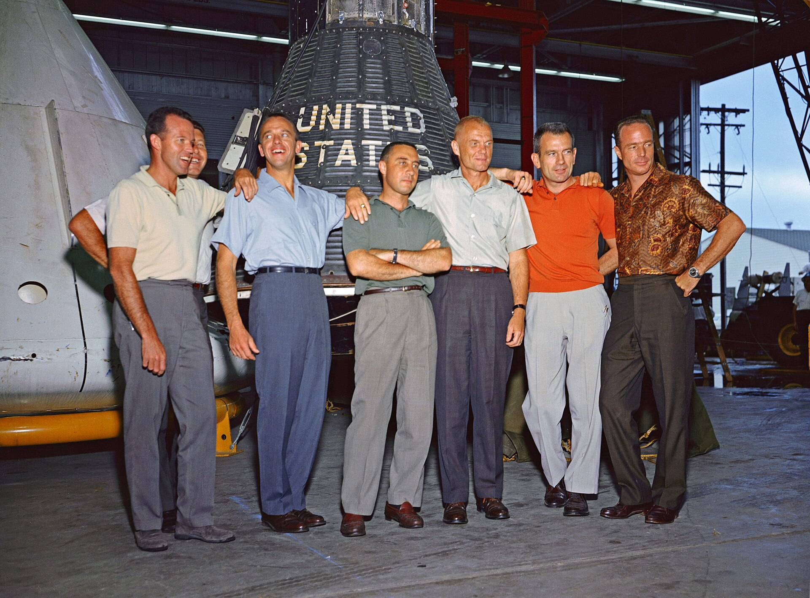
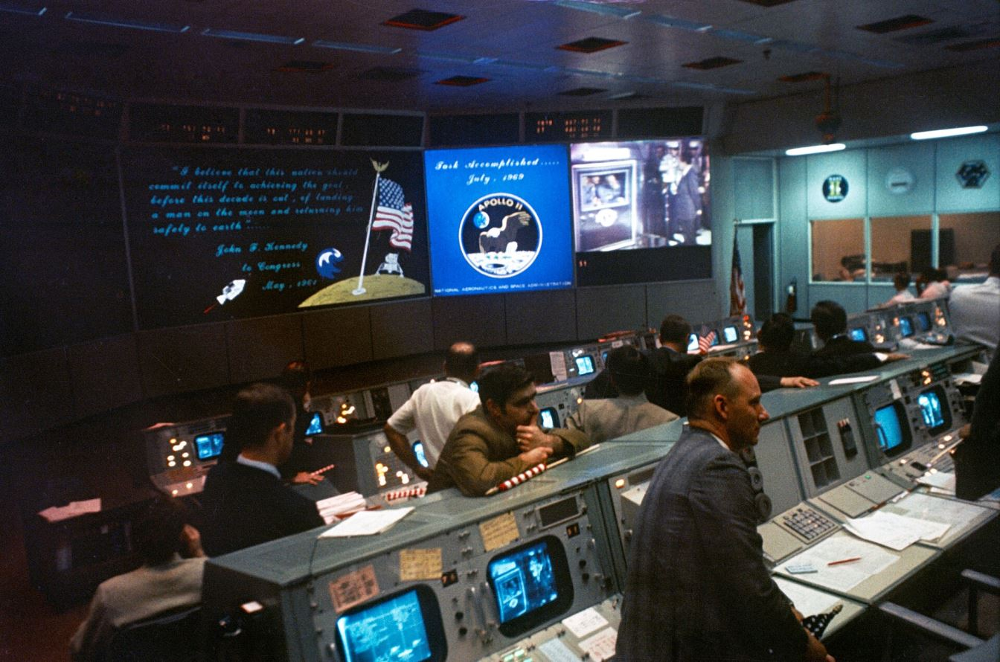

NASA was not born from nothing. It grew out of NACA, the National Advisory Committee for Aeronautics, founded in 1915 to study flight. When the space age began, the US government turned that quiet research agency into a space agency — and the rest is history.


The full timeline
The National Advisory Committee for Aeronautics starts as a research body for the young field of aviation. It will become NASA's direct predecessor.
President Eisenhower signs the National Aeronautics and Space Act; on 1 October NASA begins operations and absorbs NACA.
Alan Shepard flies Freedom 7, a 15-minute suborbital hop — three weeks after Yuri Gagarin orbited the Earth.
John Glenn circles the Earth three times in Friendship 7 in 4 hours 55 minutes.
Gemini 3 (Grissom and Young) starts a two-year program that teaches America rendezvous, docking and spacewalking.
Ed White floats outside Gemini 4 for 23 minutes, attached by a tether.
A fire on the launch pad kills Gus Grissom, Ed White and Roger Chaffee. The tragedy forces a complete redesign of the Apollo capsule — which may be why the Moon landing succeeded.
The first humans ever to leave Earth orbit. On Christmas Eve they read from Genesis, live on television, to an audience of millions.
"Houston, Tranquility Base here. The Eagle has landed." Kennedy's goal, set in 1961, is achieved with five months to spare.
Gene Cernan is the last human to walk on the Moon. The Apollo program ends with 6 landings and 12 Moonwalkers.
America's first space station, launched on the last Saturn V. Three crews live and work on board until February 1974.
An American Apollo and a Soviet Soyuz dock in orbit and shake hands. The space race officially becomes a partnership.
135 missions over 30 years: the first reusable spacecraft, and the machine that built the ISS. It also cost two crews — Challenger (1986) and Columbia (2003).
The first module, Zarya, launches in 1998; continuous crewed occupation begins in 2000 and has never stopped since.
Artemis I (2022) flies an uncrewed capsule around the Moon. In April 2026, Artemis II carries four astronauts around the Moon and back — the first crewed lunar flyby since 1972. The Moon is firmly on the program again.
The Mercury Seven — the first astronauts
NASA's first astronaut group, the Mercury Seven, was selected in 1959 from military test pilots — all men under 40, under 1.80 m tall, with at least a bachelor's degree in engineering. Their program, Mercury (1958–1963), answered the most basic question of all: can a human survive in space? Six crewed flights answered yes, one at a time — from Shepard's 15-minute hop to Gordon Cooper's 34-hour, 22-orbit marathon on the final mission. The capsule was so small that the joke ran: you didn't board a Mercury, you put it on.
Mercury also revealed that humans are not built for spaceflight without adaptation: the pilots discovered that fluids behave strangely, that sleep is hard in orbit, and that you can indeed eat, drink and work in weightlessness — but only just. Everything Apollo later relied on started as an open question here.
NASA by the numbers
The centers that made it happen
NASA's work is spread across specialised centers, each with its own job. Three of them carry the Moon program:

| Center | Founded | Role |
|---|---|---|
| Marshall Space Flight Center (Huntsville, Alabama) | 1 July 1960 | Rocket design — the Saturn V was developed here under Wernher von Braun |
| Johnson Space Center (Houston, Texas) | 1 November 1961 | Mission Control, astronaut training, capsule design |
| Kennedy Space Center (Florida) | 1 July 1962 | The launch site — Launch Complex 39 and the giant VAB |
The programs at a glance
| Program | Years | Crewed flights | What it was for |
|---|---|---|---|
| Mercury | 1958–1963 | 6 | Can a human survive spaceflight? First Americans in space and orbit |
| Gemini | 1965–1966 | 10 | Rendezvous, docking, spacewalking, long endurance — every skill Apollo needed |
| Apollo | 1961–1972 | 11 | Landing humans on the Moon — achieved 6 times |
| Skylab | 1973–1974 | 3 | America's first space station |
| Space Shuttle | 1981–2011 | 135 missions | Reusable transport to low Earth orbit; built the ISS |
| ISS | 1998–today | continuous since 2000 | Permanent international laboratory in orbit |
| Artemis | 2022– | 1 (Artemis II, 2026) | Returning humans to the Moon — and eventually Mars |
NASA's history is the story of machines — and none was bigger than the Saturn V, the rocket that made the Moon possible.